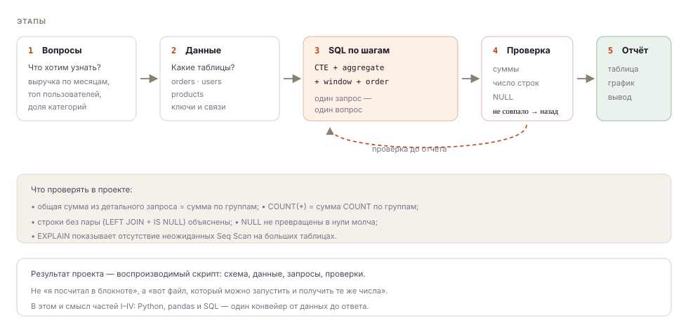

Проект: отчёт из нескольких таблиц Собрать всё, что учили: вопросы, SQL, pandas, проверки
Финальная задача книги: превратить набор данных в отчёт, которому можно верить. Не «я посчитал в блокноте», а воспроизводимый набор запросов и проверок, который пересчитает те же числа завтра.
Словарь главы — если забыли термины
- CTE
- Именованный шаг отчёта: выручка, итоги, доли.
- окно
- Доля категории или место в рейтинге рядом с каждой строкой.
- контрольная сумма
- Сверка: сумма по месяцам равна сумме категорий и общей выручке.
- воспроизводимость
- Схема, данные, запросы и проверки лежат в одном месте и запускаются снова.
01Зачем это backend-разработчику
- Отчёт — это инженерный артефакт: его нужно повторить, проверить и объяснить.
- Проверки важнее запроса: неверный запрос можно исправить, незамеченную ошибку — нет.
- Соединение миров: SQL считает, pandas оформляет; выбор обоснован объёмом.
- Собеседование: «покажите проект» — лучший ответ — аккуратный отчёт с проверками.
02Ассоциация-якорь: конвейер проекта
Проект — это конвейер: вопросы → данные → SQL по шагам → проверка → отчёт. Каждый этап можно показать и проверить отдельно.
Проверка — не формальность, а часть конвейера. Если сумма из детального запроса не равна сумме по группам, отчёт не готов — независимо от того, как красиво он выглядит.
03Ассоциативный ряд: восемь звеньев
- вопросчто хотим узнать
- схемакакие таблицы и ключи
- CTEшаг расчёта выручки
- агрегатGROUP BY по месяцам
- окнодоля и рейтинг
- проверкасуммы и строки
- pandasдинамика и оформление
- выводчто это значит
04Схема: путь от вопроса до отчёта

05Бриф: пять вопросов
Данные: users (5), products (6),
orders (10). Выручка заказа — quantity * price.
Таблица orders_big из глав 24–25 — только для замеров, в отчёте она не участвует.
- Как менялась выручка по месяцам и какой средний чек?
- Кто вошёл в топ-3 пользователей по выручке?
- Какая доля выручки у каждой категории товаров?
- Сколько гостевых заказов и какая их доля?
- Сходится ли общая выручка с суммой по месяцам?
06Лаборатория: пять запросов
Фрагменты файла 26_project.sql.
Шаг 1. Выручка, заказы и средний чек по месяцам
WITH order_revenue AS (
SELECT o.id, o.created_at, o.quantity * p.price AS revenue
FROM orders o JOIN products p ON p.id = o.product_id
)
SELECT DATE_TRUNC('month', created_at)::date AS month,
COUNT(*) AS orders,
SUM(revenue) AS revenue,
ROUND(AVG(revenue), 2) AS avg_check
FROM order_revenue
GROUP BY 1 ORDER BY 1;
Шаг 2. Топ-3 пользователей
SELECT u.name, SUM(o.quantity * p.price) AS revenue,
COUNT(*) AS orders,
RANK() OVER (ORDER BY SUM(o.quantity * p.price) DESC) AS place
FROM orders o
JOIN users u ON u.id = o.user_id
JOIN products p ON p.id = o.product_id
GROUP BY u.name
ORDER BY revenue DESC
LIMIT 3;
Шаг 3. Доля категорий
WITH category_revenue AS (
SELECT p.category, SUM(o.quantity * p.price) AS revenue
FROM orders o JOIN products p ON p.id = o.product_id
GROUP BY p.category
)
SELECT category, revenue,
ROUND(100.0 * revenue / SUM(revenue) OVER (), 1) AS share_pct
FROM category_revenue
ORDER BY revenue DESC;
Шаг 4. Гостевые заказы
SELECT COUNT(*) AS guest_orders,
SUM(o.quantity * p.price) AS guest_revenue,
ROUND(100.0 * SUM(o.quantity * p.price) /
(SELECT SUM(o2.quantity * p2.price)
FROM orders o2 JOIN products p2 ON p2.id = o2.product_id), 2) AS share_pct
FROM orders o
JOIN products p ON p.id = o.product_id
WHERE NOT EXISTS (SELECT 1 FROM users u WHERE u.id = o.user_id);
Шаг 5. Контроль: общая выручка
SELECT SUM(quantity * price) AS total_revenue FROM orders o JOIN products p ON p.id = o.product_id;
Сумма по месяцам (78150 + 25750 + 98500) = 202400. Сумма категорий (195500 + 4200 + 2700) = 202400. Контроль сошёлся — можно двигаться к выводам.
07Мост: небольшая аналитика в pandas
Месячная сводка — маленькая (3 строки), её удобно дооформить в pandas: посчитать динамику.
Сначала выгружаем сводку в CSV, затем читаем её в скрипте
26_project.py
(команда экспорта — в docstring файла). Это тот же отчёт, но уже на стороне приложения.
import pandas as pd
df = pd.read_csv("/tmp/monthly.csv")
df["growth_pct"] = (df["revenue"].pct_change() * 100).round(1)
print(df.to_string(index=False))
print("total revenue:", df["revenue"].sum(), "| orders:", df["orders"].sum())
Вывод: февраль — провал (−67.1%), март — рост (+282.5%). Но осторожно: строк мало, один заказ на 75 000 искажает картину. Один из выводов отчёта — «выборка слишком мала для выводов о тренде».
08Шесть ошибок, на которых спотыкаются
Красивая таблица с неверной суммой — хуже, чем отсутствие отчёта.
INNER JOIN с users выбрасывает заказы без пользователя, и суммы не сходятся.
Средний чек искажается, если неизвестное считают нулём.
Запросы остались в истории чата, данные — в голове.
Один гигантский запрос на все вопросы — сложно проверить и поддерживать.
Таблица без интерпретации — это данные, а не отчёт.
09Вопросы для самопроверки
Почему в первом запросе есть CTE?
Чтобы отделить вычисление выручки заказа от группировки: читаемо и переиспользуемо.
Почему для доли использовано окно, а не второй GROUP BY?
SUM(revenue) OVER () возвращает общий итог рядом с каждой категорией — не нужен подзапрос и не теряются строки.
Почему гостевые заказы ищутся через NOT EXISTS?
Потому что NOT IN с NULL в подзапросе даёт пустой результат (глава 20), а NOT EXISTS безопасен.
Как проверить, что отчёт полный?
Сверить общий итог с суммой по группам и число строк; явно проверить строки без пары.
Почему предупреждение о малой выборке — часть отчёта?
Потому что числа не значат больше, чем позволяют данные. Честное ограничение ценнее уверенного вывода.
Что здесь сделано в SQL, а что в pandas и почему?
В SQL — фильтрация, соединения и агрегаты (рядом с данными). В pandas — небольшая сводка и динамика (гибко, объём мал).
10Задание и критерии
Задание. Соберите отчёт по базе learning_shop из
пяти вопросов выше. Сдайте один скрипт или файл с запросами и результатами.
2 — все пять вопросов отвечены и числа воспроизводятся; 2 — контрольные суммы сошлись; 2 — гостевые заказы и NULL обработаны явно; 2 — SQL и pandas использованы осознанно; 2 — есть 2–3 вывода и одно ограничение.
11Что вы теперь умеете
Части I–V собраны в один маршрут: Python → NumPy → pandas → SQL → интеграция. В каждой главе была одна и та же логика: ассоциация, схема, лаборатория, ошибки, вопросы.
| Часть | Что освоено |
|---|---|
| I · Python | dict, list/tuple, set, comprehensions, collections |
| II · NumPy | ndarray, маски, axis, broadcasting, views/copies |
| III · pandas | Series/DataFrame, loc/iloc, фильтры, groupby, merge, пропуски, даты |
| IV · SQL | WHERE/NULL, GROUP BY, CTE, окна, индексы и EXPLAIN |
| V · Интеграция | выбор инструмента и отчёт с проверками |